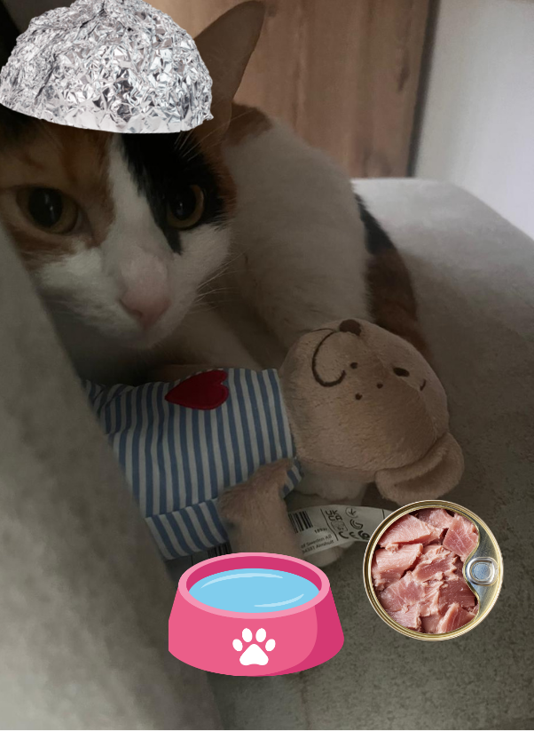
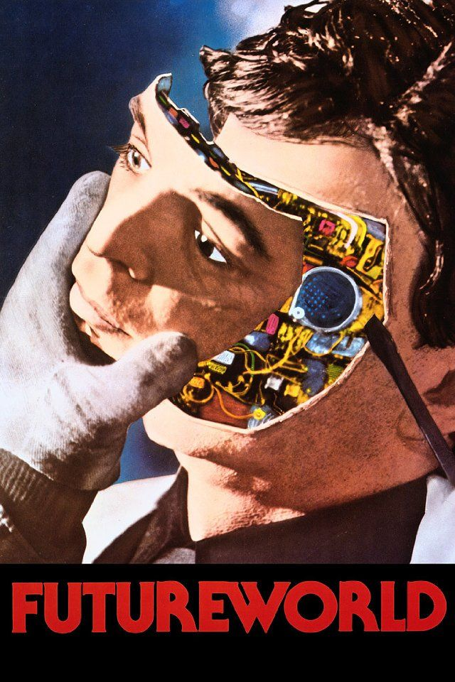
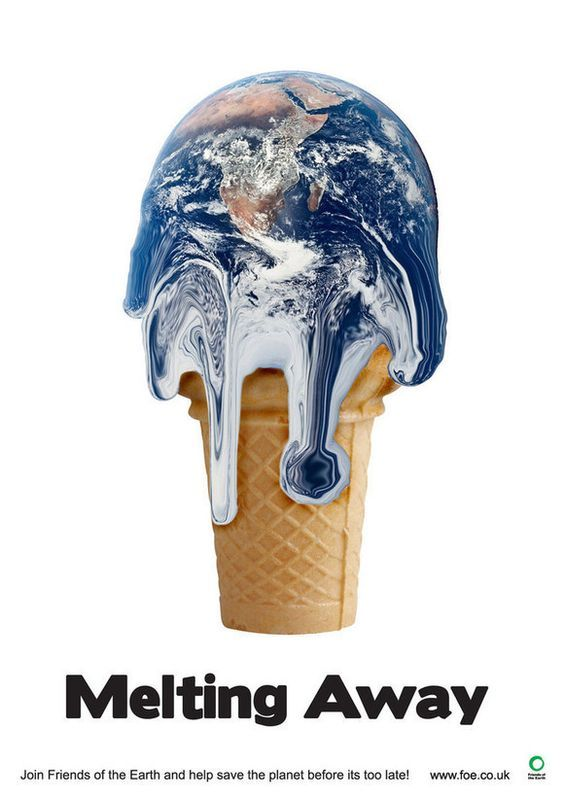

¿Quién quiere venir a mi búnker con Churu ilimitado? Bueno, este tema es serio, por eso no haré chistes.

Los humanos y sus historias de ciencia ficción... Me agrada su creatividad, pero no su forma de lidiar con los problemas.

Tengo miedo sobre el futuro del planeta tierra. Soy sensible a las altas temperaturas y a los cambios abruptos. Espero poder sobrevivir, y que mi dueña me siga protegiendo.
Volver a inicio